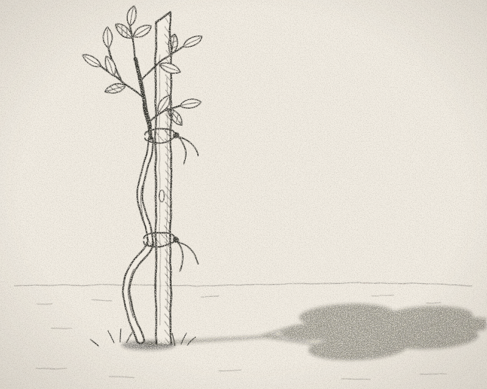

01
If someone asks for help, help
Around 2005, when I was still very young, I made myself a rule. If someone asks me for help while I am in the middle of my own work, I put it down and help. The only exception is something truly critical, like a problem in production.
I have kept that rule ever since and never saw it do me harm. Now and then it meant working a little longer to finish my own task. In return it made me more valuable to the people around me, and it carried the whole team further.
Who is the most valuable person on a team: the one who works the hardest, the one who writes the most code, or the one who helps teammates the most? Each has its strengths, but in my eyes it is the one who helps.
Told at CS TechTalks Alumni, IEEE Marmara in March 2021, and at Agile Buluşmalar, Agile Türkiye in April 2016.